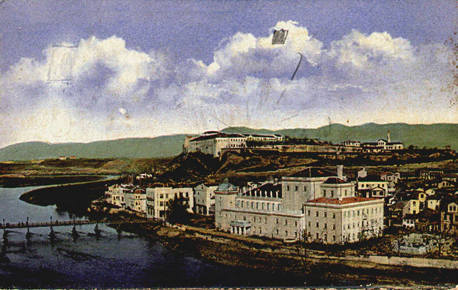

Kale
- Produktion
- UFUŽ und Dokumentarfilm Prag
- Drehbuch und Regie
- Slavko Janevski und EMAN CANERA
- Jahr
- 1959
- Dauer
- 00:10

Der Eingang zur Festung von Skopje - Kale. (Anfang des 20. Jahrhunderts)
Einen der markantesten Orte im Zentrum der Stadt Skopje nimmt die Festung von Skopje - Kale* ein. Archäologische Ausgrabungen zeigen, dass die Kale schon in vorgeschichtlicher Zeit besiedelt war - im Neolithikum und in der frühen Bronzezeit. Man lebte auf der Kale wegen ihrer hervorragenden strategischen Lage. Die Untersuchung des Bauwerks ergab, dass in den Fundamenten Material aus Scupi verwendet wurde, das beim verheerenden Erdbeben von 518 fast völlig zerstört worden war. Nach diesem Erdbeben zog die Stadt an ihren heutigen Standort. Es entstand eine Befestigung, die im Lauf der Jahrhunderte erweitert und verstärkt wurde. Heute ist nur ein kleiner Teil davon erhalten; er wurde restauriert, und in seiner Mitte wurde eine Promenade angelegt.
* (Kale bedeutet auf Türkisch Festung, und die Bevölkerung übernahm das Wort als Kurzname für die Festung von Skopje)

Die Festung von Skopje - Kale mit einem Teil ihrer Mauern.
- Anfang des 20. Jahrhunderts

Die Festung von Skopje - Kale - 1910er Jahre.

Die Festung von Skopje - Kale - aufgenommen von der Seite des heutigen Parks, Ende des 19. Jahrhunderts.

Die Festung von Skopje - Kale - 1910er Jahre.

Die Festung von Skopje - Kale - 1910er Jahre.

Die Festung von Skopje - Kale. Aufgenommen vom Standort des heutigen Parks, 1910er Jahre.

Die Festung von Skopje - Kale. Aufgenommen vom Standort des heutigen Parks, 1910er Jahre.

Blick auf die Festung von Skopje - Kale. 1920er Jahre.

Blick auf die Festung von Skopje - Kale von der Nordseite.
- 1910er Jahre.

Ein wunderbares Foto der Stadt und des Laufs des Vardar. Links die Festung von Skopje - Kale. In der Mitte das Offiziersheim und die Nationalbank. Rechts der Berg Vodno, in der Ferne die Ränder des Kitka-Gebirges
- Ende der 1920er Jahre.

Die Festung von Skopje - Kale und das alte Kaffeehaus „Boges“, in dem sich die Schauspieler trafen und die ersten Theateraufführungen stattfanden - Anfang des 20. Jahrhunderts.

Die Festung von Skopje - Kale mit den Kasernengebäuden - 1911. Unterhalb der Festung ist das alte Kaffeehaus „Boges“ zu sehen.

Die Festung von Skopje - Kale und das alte Kaffeehaus „Boges“
- Ende der 1910er Jahre.

Das Foto wurde um 1910 von der Steinbrücke aus aufgenommen. Links das alte türkische Theater, darüber die Festung von Skopje - Kale.

Das Foto wurde um 1910 von der Steinbrücke aus aufgenommen. Links das alte türkische Theater, darüber die Festung von Skopje - Kale.

Die Festung von Skopje - Kale und das alte jüdische Viertel darunter - Ende der 1910er Jahre.

Die Festung von Skopje - Kale mit einem Teil der im Bau befindlichen Häuser des jüdischen Viertels - 1920er Jahre.

Die Festung von Skopje - Kale, darunter ein Teil der Häuser des jüdischen Viertels - 1920er Jahre.

Die Festung von Skopje - Kale und die neu errichteten Gebäude im jüdischen Viertel - 1920er Jahre.

Die Festung von Skopje - Kale mit einem Teil der Häuser des jüdischen Viertels - 1920er Jahre.

Die Festung von Skopje - Kale und die neu errichteten Gebäude im jüdischen Viertel - 1920er Jahre.

Die Festung von Skopje - Kale. Darunter ein Teil der Häuser des jüdischen Viertels - 1920er Jahre.

Die Festung von Skopje - Kale und die neu errichteten Gebäude im jüdischen Viertel - 1920er Jahre.

Blick auf die Festung von Skopje - Kale aus einer der Straßen des jüdischen Viertels - 1920er Jahre.

Foto vom Offiziersheim aus - um 1930. Eine wunderbare Aufnahme des Nationaltheaters, des kleinen Holzstegs und der Festung von Skopje - Kale.

Im Vordergrund das Nationaltheater, darüber erhebt sich die Festung von Skopje - Kale - 1930er Jahre.

Foto der Festung von Skopje - Kale, auf dem die einzelnen Teile der Befestigung gut zu erkennen sind. Unterhalb der Festung das Nationaltheater in seiner ganzen Schönheit.
- 1930er Jahre.

Foto der Festung von Skopje - Kale, auf dem die einzelnen Teile der Befestigung gut zu erkennen sind. Unterhalb der Festung ist das Nationaltheater zu sehen - 1930er Jahre.

Im Vordergrund das Nationaltheater, darüber erhebt sich die Festung von Skopje - Kale - 1950er Jahre.

 Aquädukt4 Postkarten
Aquädukt4 Postkarten Kale30 Postkarten
Kale30 Postkarten Brücken60 Postkarten
Brücken60 Postkarten Kai58 Postkarten
Kai58 Postkarten Platz46 Postkarten
Platz46 Postkarten Bauten66 Postkarten
Bauten66 Postkarten Christliche Gotteshäuser19 Postkarten
Christliche Gotteshäuser19 Postkarten Muslimische Bauten33 Postkarten
Muslimische Bauten33 Postkarten Offiziersheim29 Postkarten
Offiziersheim29 Postkarten Theater28 Postkarten
Theater28 Postkarten Bahnhof13 Postkarten
Bahnhof13 Postkarten Schulen36 Postkarten
Schulen36 Postkarten Parks12 Postkarten
Parks12 Postkarten Märkte18 Postkarten
Märkte18 Postkarten Straßen38 Postkarten
Straßen38 Postkarten Panorama I60 Postkarten
Panorama I60 Postkarten Panorama II30 Postkarten
Panorama II30 Postkarten Collagen55 Postkarten
Collagen55 Postkarten Hochwasser9 Postkarten
Hochwasser9 Postkarten Erdbeben27 Postkarten
Erdbeben27 Postkarten Skopje 200026 Postkarten
Skopje 200026 Postkarten